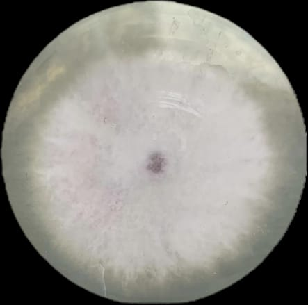
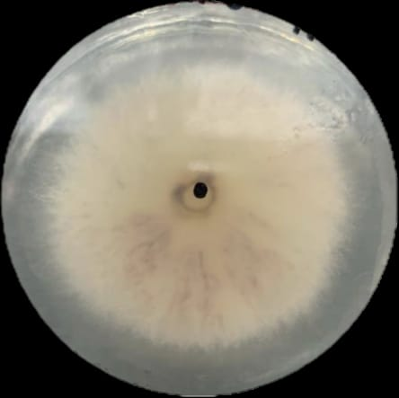

La muestra identificada con código CAM D fue analizada el 11 de abril de 2025 por Lamas Medina Yamili Catherine, Salazar Ramírez Jennyfer Alondra y Varela Rojas Guadalupe Elizabeth. El cultivo se realizó en medio Agar Papa Dextrosa (PDA).
En cuanto a las características macroscópicas, la colonia presentó un crecimiento progresivo con diámetros de 15.64 mm al día 1, 45.71 mm al día 3, 71.98 mm al día 5, 90.84 mm al día 7 y 95.3 mm al día 10, con una tasa de crecimiento aproximada de 1.5 ± 0.07 mm/h.
La forma de la colonia fue circular, con un margen filamentoso y elevación convexa. La textura fue aterciopelada. El color de la superficie se mantuvo blanco durante el crecimiento, mientras que el reverso mostró una coloración blanco amarillenta con presencia de líneas moradas oscuras como zonación.
Se observaron exudados transparentes en forma de cuatro gotas. No se detectó producción de pigmentos difusibles en el medio ni se registró olor característico.